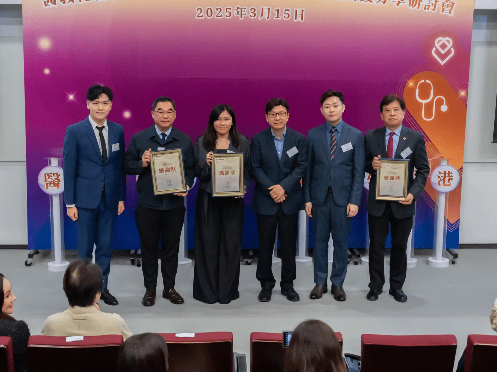

首衛有限公司接受勞工及福利局孫玉菡局長，JP 頒發感謝狀

Hygiene First 首衛有限公司榮獲勞工及福利局孫玉菡局長，JP 頒發感謝狀，以表彰我們在社會福利服務領域的傑出貢獻。
此次獲獎充分體現了政府對我們專業護理服務品質的認可，也肯定了我們在推動長者社區照顧服務方面的努力和成果。
我們將繼續秉承專業、關愛、創新的服務理念，為社會提供更優質的護理服務，回饋社會各界的信任與支持。

Hygiene First 首衛有限公司榮獲勞工及福利局孫玉菡局長，JP 頒發感謝狀，以表彰我們在社會福利服務領域的傑出貢獻。
此次獲獎充分體現了政府對我們專業護理服務品質的認可，也肯定了我們在推動長者社區照顧服務方面的努力和成果。
我們將繼續秉承專業、關愛、創新的服務理念，為社會提供更優質的護理服務，回饋社會各界的信任與支持。